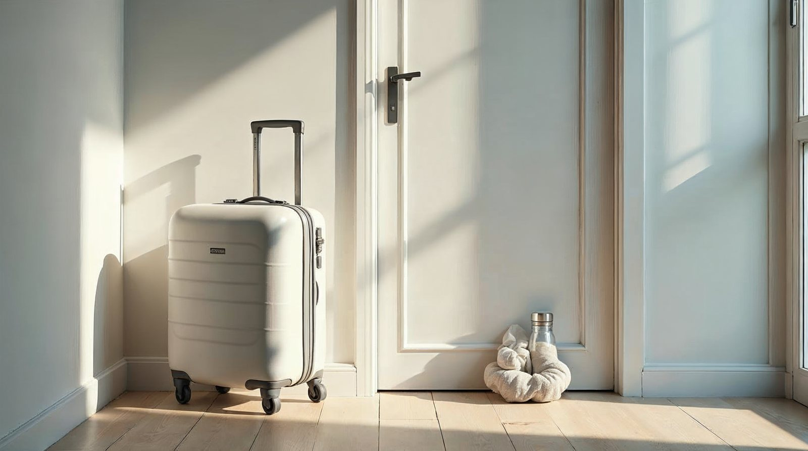
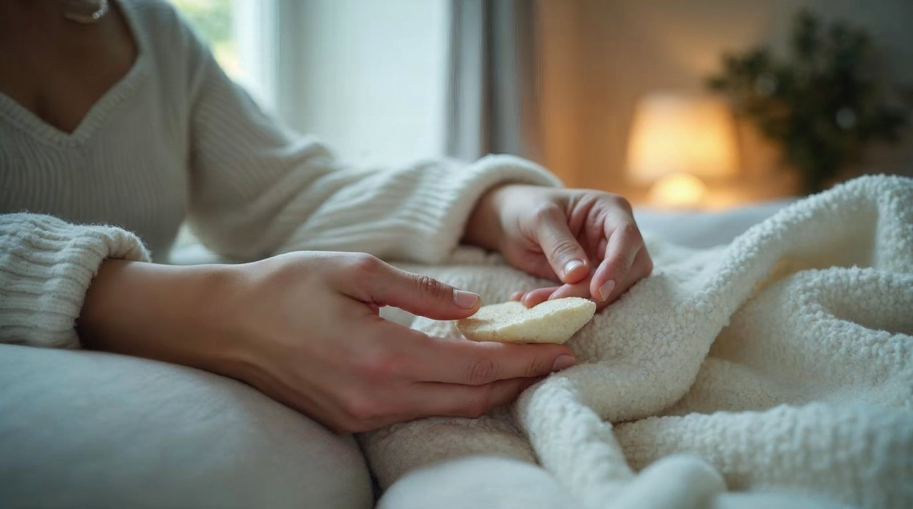
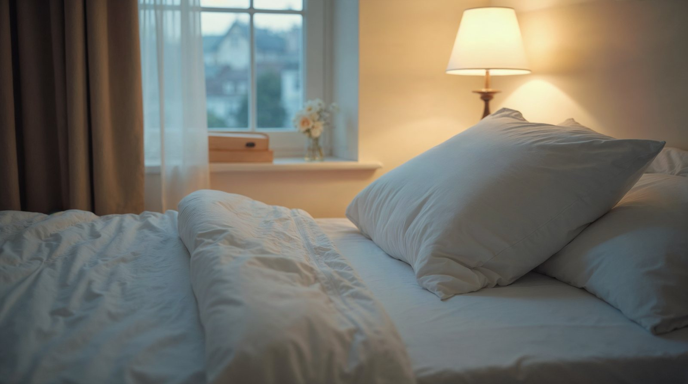

이종호 한의사 감수좋은꿈참사랑한의원 대표원장 (한의사 면허번호 19769)발행 2026-11-25 · 수정 2026-11-27
이 글의 차례
새벽 5시, 비행기 바퀴가 활주로에 닿는 진동에 눈을 뜹니다. 열 시간 넘게 좁은 좌석에 앉아 있는 동안 고개는 앞으로 떨어졌다 옆으로 꺾였다를 되풀이했어요. 목을 바로 세우려는데 뒷목이 뻣뻣해 어깨까지 함께 돌아갑니다.
휴대폰을 켜자 밀린 메일 알림이 줄줄이 뜨고, 집에 들러 씻고 옷만 갈아입은 채 회사로 향하시죠. 그날 밤 10시가 넘어 퇴근해 누우면 몸은 녹초인데 눈은 이상하게 말똥말똥해요. 달력에는 2주 뒤 또 다른 출장이 적혀 있고요.
진료실에서 이런 말씀을 자주 들어요. "출장 한 번 다녀오면 일주일은 목이 돌덩이예요." "잠을 못 자니까 목이 더 아프고, 목이 아프니까 잠이 더 안 와요." 어느 쪽이 먼저인지 모르겠다는 분이 많아요. 몸은 아직 어느 나라 시간에 머물러 있는지도 모르는데, 회사 시계에는 맞춰 살아야 하니까요.
모처럼 주말이 와도 쉬는 법을 잊어버린 것 같다고들 하세요. 그 말씀 끝에 잠깐 비치는 지친 얼굴을 저는 자주 봐요. 공항과 사무실 사이를 오가며 그동안 얼마나 애쓰셨을까 싶어요.
먼저 이 말씀부터 드릴게요. 원래 그래요. 왜인 줄 아세요? 잠이 모자라면 같은 뻐근함도 더 크게 느끼기 쉽고, 목이 불편하면 잠은 또 얕아지거든요. 잠과 뒷목이 서로 꼬리를 물고 도는 거예요. 의지가 약해서 생기는 일이 아니에요.
그래서 제 대답은 이래요. 잠과 뒷목을 따로따로 고치려 하기보다, 둘을 함께 흔드는 고리를 하나씩 풀어 보자는 거예요.
순서는 단순해요. 출장 전에는 미리 조금 옮겨 두고, 비행 중에는 목을 받쳐 주고, 도착해서는 현지의 빛과 끼니에 몸을 맞추고, 귀국해서는 일어나는 시각부터 되찾는 거예요. 야근이 겹친 주에도 잠드는 시각보다 일어나는 시각을 먼저 붙드시고요.
카페인이나 술, 멜라토닌 같은 건 사람마다 반응이 달라 한마디로 정해 드리기 어려워요. 드시는 약이 있다면 무엇이든 의사·약사와 먼저 상의하시길 권해요.
왜 잠과 뒷목이 함께 무너질까요
몸에는 하루를 재는 시계가 있습니다. 이 시계는 햇빛, 끼니 시각, 움직이는 시간 같은 신호를 받아 조금씩 맞춰집니다. 시차가 큰 곳으로 가면 이 신호들이 한꺼번에 어긋나고, 몸이 새 시간에 맞추기까지는 며칠이 걸립니다.
그런데 출장이 잦으면 겨우 맞출 만하면 또 떠납니다. 여기에 야근으로 밤늦게까지 밝은 화면을 보면 몸은 밤이 왔다는 신호를 더 늦게 받습니다. 시계 하나가 하루에도 몇 번씩 서로 다른 신호를 받는 셈입니다.
뒷목은 그 사이에서 묵묵히 일합니다. 비행기 좌석에서 졸면 고개가 앞으로 떨어지거나 옆으로 꺾인 채 오래 머뭅니다. 그동안 목 뒤와 옆 근육은 머리 무게를 붙잡고 버팁니다.
좌석 트레이에 노트북을 올려 일하면 화면이 낮아 고개는 숙여지고 어깨는 말립니다. 송풍구 바람이 목덜미에 계속 닿으면 저도 모르게 어깨를 움츠리게 됩니다. 도착한 숙소의 베개는 집 베개와 높이가 달라, 밤새 목이 낯선 각도로 놓입니다.
야근하는 날의 목도 크게 다르지 않습니다. 마감에 쫓기면 어깨가 귀 쪽으로 올라가고 이를 꽉 물게 됩니다. 모니터 쪽으로 고개를 내민 채 몇 시간이 흐릅니다. 이렇게 굳은 뒷목은 머리를 조이는 듯한 두통으로 이어지기도 합니다.
그리고 두 가지는 서로를 끌어당깁니다. 잠이 짧고 얕으면 다음 날 같은 뻐근함도 더 크게 느끼고, 목이 뻐근하면 편한 자세를 찾아 뒤척이느라 잠이 또 얕아집니다.
졸음을 쫓으려 커피를 한 잔 더 마시고, 잠들려고 술 한 잔을 찾는 것도 흔한 흐름입니다. 술은 잠드는 것을 도와주는 것처럼 느껴지지만 수면 후반을 얕게 만들어 새벽에 깨기 쉽게 한다고 알려져 있습니다.
한의학에서는 피로와 긴장이 쌓여 기혈이 원활히 돌지 못하면 목과 어깨가 쉽게 굳고 결린다고 보기도 합니다. 그래서 저는 잠과 뒷목을 한 고리로 놓고 함께 봅니다.
이런 분들을 자주 뵙습니다
이런 분들이 많습니다. 한 달에 한두 번 장거리 출장을 다니는 분입니다. 출장에서 돌아온 주에는 자리를 비운 사이 밀린 일 때문에 야근이 몰립니다. 몸은 아직 시차를 건너오는 중인데 밤 11시까지 모니터 앞에 앉아 있습니다. 그러면 새벽 3시쯤 눈이 떠지고, 오후 3시쯤엔 뒷목이 묵직하게 내려앉습니다.
이런 분께는 출장 날짜와 야근이 몰린 날을 한 장의 달력에 같이 적어 와 달라고 부탁드립니다. 겹치는 자리가 눈에 보이면 무엇부터 덜어 낼지 이야기하기가 쉬워집니다.
짧은 출장을 자주 다니는 분들도 계십니다. 가까운 나라라 시차가 크지 않아도 새벽 비행기, 하루 종일 이어지는 회의, 늦은 저녁 자리가 겹치면 리듬은 쉽게 무너집니다.
시차가 큰 곳이라도 이삼일 만에 돌아오는 일정이라면, 몸을 현지 시간에 억지로 다 맞추기보다 한국에서의 기상·끼니 시각에 가깝게 지내는 쪽을 택하는 분들도 있습니다. 어느 쪽이 맞을지는 일정과 몸 상태를 보며 함께 정합니다.
출장을 가지 않는 주에도 몸은 출장 중인 분들이 있습니다. 해외 지사나 거래처와 밤 10시, 11시에 화상 회의를 하는 분들입니다. 회의가 끝나면 자정이 넘고, 머리는 한낮처럼 깨어 있습니다. 노트북을 식탁에 그대로 두고 회의하다 보면 화면을 내려다보느라 한 시간 내내 고개가 숙여져 있기도 합니다.
그리고 모처럼 쉬는 주말에 몰아서 주무시는 분들. 토요일 정오가 다 되어 일어나고, 일요일 밤에는 잠이 오지 않고, 월요일 아침은 더 무겁습니다. 몰아서 잔 잠이 쌓인 피로를 다 갚아 주면 좋겠지만, 몸의 시계에는 그것이 또 한 번의 작은 시차가 됩니다.

출장 전·비행 중·도착 후·귀국 후, 순서대로 챙길 것
출장 전: 미리 조금 옮겨 두기
시차가 큰 곳으로 떠난다면 출발 2~3일 전부터 잠자리와 일어나는 시각을 도착지 쪽으로 30분에서 한 시간씩 옮겨 보세요. 한 번에 다 맞추려 하지 않아도 됩니다. 조금 옮겨 두는 것만으로도 도착 첫날의 부담을 미리 나눌 수 있습니다.
출발 전날 밤을 새워 일을 몰아 끝내고 비행기에서 자면 된다는 계획은 목에게 가장 불리합니다. 지칠 대로 지친 몸으로 좁은 좌석에서 곯아떨어지면 고개가 꺾인 채 몇 시간을 버티기 쉽습니다. 출발 전날만큼은 평소 시각에 잠자리에 드시길 권합니다.
짐에는 목베개, 목덜미를 덮을 얇은 머플러, 안대와 귀마개를 챙깁니다. 가방은 한쪽 어깨에 메는 것보다 바퀴 달린 가방이나 양쪽으로 메는 가방이 목과 어깨에 덜 부담스럽습니다.
복용 중인 약은 일정보다 넉넉하게, 처음 받은 포장 그대로 챙기고 약 이름을 적은 메모를 함께 넣어 두세요. 약과 건강기능식품을 가지고 갈 수 있는지는 나라마다 규정이 다르니 출발 전에 확인해 두셔야 합니다. 잠을 돕는다는 약이나 제품을 이번 출장에서 처음 써 볼 생각이라면 먼저 의사·약사와 상의하세요.
비행 중: 목은 받쳐 주고, 잠은 도착지의 밤에
탑승하면 시계를 도착지 시간으로 바꿔 둡니다. 도착지가 밤인 시간에는 자려고 해 보고, 낮인 시간에는 되도록 깨어 있습니다. 다 지키기는 어렵지만 기준이 있으면 몸이 덜 헤맵니다.
잘 때는 등받이를 젖히고 허리 뒤에 담요를 말아 받칩니다. 목베개는 고개가 앞이나 옆으로 꺾이지 않게 받쳐 주는 쪽으로 둡니다. 창가 자리라면 벽 쪽으로 고개가 기울어지기 쉬우니 그 사이를 베개나 담요로 채워 주세요. 송풍구 바람이 목덜미에 바로 닿지 않게 방향을 돌리고 머플러로 목을 덮어 두면 어깨를 움츠릴 일이 줄어듭니다.
깨어 있는 동안에는 한두 시간마다 일어나 통로를 걷고 발목을 돌립니다. 자리에 앉아서는 어깨를 귀 쪽으로 올렸다가 천천히 내리고, 턱을 살짝 당겨 목 뒤를 길게 하고, 아프지 않은 범위에서 고개를 좌우로 천천히 돌려 봅니다.
트레이 위 노트북 작업은 되도록 짧게 하고, 꼭 해야 한다면 30분마다 고개를 들어 등받이에 등을 붙인 채 숨을 몇 번 길게 내쉬세요. 물은 자주 조금씩 마시고 술은 줄이는 편이 좋습니다. 커피는 도착지 기준으로 낮일 때만 마시고, 그곳의 밤이 다가오면 멈춥니다.
도착 후 첫 이틀: 현지의 빛과 끼니에 맞추기
도착한 날은 현지 시간으로 밤이 될 때까지 버텨 보세요. 너무 힘들다면 이른 오후에 20~30분만 짧게 눈을 붙입니다. 길고 늦은 낮잠은 그날 밤잠을 밀어냅니다. 낮에는 밖에서 햇빛을 보며 15분쯤 걷고, 끼니는 배가 덜 고프더라도 현지 시각에 맞춰 가볍게 드세요.
숙소 베개가 높으면 빼고 수건을 접어 높이를 맞추고, 낮으면 접은 수건을 베개 밑에 받칩니다. 누웠을 때 목이 앞으로 꺾이지도 뒤로 젖혀지지도 않으면 됩니다.
늦은 회의나 저녁 자리를 마치고 돌아오면 바로 눕지 말고 따뜻한 샤워로 목덜미와 어깨를 10분쯤 데워 보세요. 하루의 긴장을 내려놓는 신호가 됩니다. 저녁 자리의 술은 잔 수를 미리 정해 두고 물을 함께 드시면 다음 날 아침이 조금 덜 무겁다고 하는 분들이 많습니다.
귀국 후 일주일: 일어나는 시각부터 되찾기
할 수만 있다면 귀국한 날은 일정을 비워 두세요. 그게 어렵다면 적어도 그날만큼은 야근을 피합니다. 다음 날부터는 평소 일어나던 시각에 일어나 커튼을 열고, 낮에는 밖의 빛을 충분히 봅니다. 어느 방향으로 다녀왔느냐에 따라 빛을 보면 좋은 때가 조금 달라지기도 해서, 출장지가 자주 바뀌는 분과는 진료 때 일정을 놓고 함께 이야기합니다.
새벽에 일찍 깼더라도, 밤에 늦게 잠들었더라도 일어나는 시각은 크게 흔들지 않습니다. 주말에도 평일과 한 시간 넘게 차이 나지 않게 맞추고, 낮잠은 오후 3시 전에 20분 안쪽으로만 잡습니다.
커피는 오후 이른 시간까지만 드시는 분이 많습니다. 다만 카페인이 몸에 남는 시간은 사람마다 꽤 달라서, 마지막 잔을 마신 시각과 그날 잠든 시각을 며칠 나란히 적어 보며 본인의 기준을 정하시길 권합니다.
저녁은 잠들기 3시간 전쯤 마치고, 저녁에 20~30분쯤 옆 사람과 이야기를 나눌 수 있을 만한 속도로 걷습니다. 잠들기 1~2시간 전에는 따뜻한 물에 몸을 담그거나, 시간이 없으면 발만 10~15분 담가도 됩니다.
뒷목은 따뜻한 수건으로 10분쯤 데우고, 한 시간에 한 번은 자리에서 일어나 고개를 천천히 돌리고 어깨를 내려 줍니다. 3~4일이 지나도 남는 불편이 있다면 그때 정리해서 말씀해 주세요. 시차 피로는 며칠 사이에 저절로 가라앉기도 해서, 그 뒤에도 남는 것을 함께 살펴보는 편이 이야기가 분명해집니다.
야근이 겹친 주에는 이렇게
출장에서 돌아온 주에 야근까지 몰린다면 모든 것을 다 지키려 하지 마세요. 저는 세 가지만 붙들자고 말씀드립니다. 일어나는 시각, 커피의 마지막 잔, 그리고 귀가 후의 순서입니다.
일어나는 시각은 전날 아무리 늦게 잤어도 평소와 한 시간 안쪽으로 맞춥니다. 잠이 모자란 날은 아침에 늦게 일어나기보다 그날 밤 잠드는 시각을 조금 당기는 쪽으로 갚아 보세요.
커피는 하루 몇 잔까지, 몇 시까지로 아침에 정해 둡니다. 피곤한 오후에는 계획에 없던 한 잔이 자꾸 늘어나기 마련이니까요. 에너지 음료에도 카페인이 들어 있는 경우가 많으니 커피와 겹치는 날은 양을 함께 세어 보세요.
회사 문을 나서기 전에 목부터 퇴근시켜 주세요. 모니터를 끄고 의자에서 일어나 어깨를 뒤로 천천히 다섯 번 돌리고, 내일 할 일 세 줄을 메모장에 적어 둡니다.
집에 들어서면 휴대폰은 침실 밖 충전기에 꽂아 두고, 따뜻한 물로 목덜미와 어깨를 충분히 데운 뒤, 불을 낮춘 방에서 10분쯤 앉아 숨을 길게 내쉽니다. 이 순서를 매번 같은 차례로 되풀이하면 몸이 이제 쉴 시간이라는 것을 알아차리기 쉬워집니다.
밤에 해외와 화상 회의를 하는 날에는 노트북을 책 몇 권 위에 올려 화면과 카메라를 눈높이에 맞추세요. 고개를 숙인 채 한 시간을 보내는 것과 바로 앞을 보며 보내는 것은 뒷목에 남는 것이 다릅니다. 회의가 끝나면 바로 눕기보다 20~30분쯤 조명을 낮추고 머리를 식히는 시간을 둡니다.
야근이 한 주 내내 이어진다면, 그중 하루는 정해진 시각에 퇴근하는 날로 미리 달력에 표시해 두는 분들도 있습니다. 하루만이라도 몸이 제때 밤을 맞는 날이 있으면 주말에 몰아서 갚아야 할 잠이 조금은 줄어듭니다.

얼마나 지켜보고, 언제 진료를 받을까요
귀국 뒤 3~4일, 길어도 1~2주 안에 잠이 대체로 제자리를 찾는지 지켜보세요. 그동안 잠든 시각과 깬 시각, 뒷목 뻐근함 점수(0~10), 두통이 있었던 날을 적어 두면 좋습니다. 출장과 야근이 돌아올 때마다 같은 모습이 되풀이된다면 그 기록이 다음 출장 계획의 바탕이 됩니다.
잠이 흔들리는 날이 한 달 넘게 이어지고 낮에도 일에 집중하기 어렵다면, 혼자 참지 마시고 상담을 받아 보시길 권합니다.
코를 크게 골고 자는 동안 숨이 멎는다는 말을 들었거나 운전 중 졸음을 참기 어렵다면, 기다리지 말고 먼저 수면 검사를 받아 보시길 권합니다. 졸음이 심한 날에는 운전대를 잡지 않습니다. 귀국 뒤 열이나 심한 설사가 이어질 때도 먼저 병원 진료를 받으세요.
이런 증상은 먼저 확인이 필요합니다
- 비행 뒤 한쪽 종아리나 다리가 붓고 붉어지며 아픈 경우
- 숨이 차거나 가슴이 아픈 경우
- 스스로를 해칠 생각이 들면 ☎ 109로 바로 연락하세요.
이런 신호가 있으면 한의원보다 가까운 병원이나 응급실을 먼저 찾으세요.

좋은꿈참사랑한의원에 처음 오시면
처음 오시면 저는 모든 분의 맥을 먼저 짚고, 최근 석 달 동안의 출장 일정부터 여쭙니다. 어느 나라에 며칠씩 다녀오셨는지, 시차는 몇 시간이었는지, 야근은 한 달에 몇 주쯤 몰리는지요. 그리고 바쁘지 않을 때의 평소 잠을 여쭙습니다. 평소를 알아야 무엇이 얼마나 흔들렸는지 보이기 때문입니다.
귀국 뒤 잠이 돌아오기까지 며칠이 걸리는지, 뒷목은 비행 직후와 야근 주와 아침 가운데 언제 가장 무거운지, 두통이나 팔 저림은 없는지, 커피와 술은 얼마나 드시는지, 복용 중인 약과 건강기능식품은 무엇인지도 차례로 듣습니다.
맥을 짚는 동안에는 몸이 찬 편인지 더운 편인지, 끼니와 소화는 어떤지, 대소변은 편한지, 새벽에 깨는지 함께 여쭙고, 필요하면 혀와 배도 살핍니다.
뒷목은 고개를 돌리고 숙이고 젖히는 움직임, 어깨 높이와 날개뼈의 움직임, 팔의 감각과 힘을 확인합니다. 필요하다고 판단되면 초음파로 목과 어깨 둘레의 근육과 힘줄을 살펴보기도 합니다. 코골이와 숨 멈춤이 의심되면 수면 검사가 가능한 의료기관을 먼저 안내합니다.
그렇게 들은 이야기를 모아 침이나 추나, 한약 상담 가운데 지금 상태에 맞는 방법을 함께 정합니다. 출장이 잦은 분이라면 출발 1~2주 전과 귀국 3~4일 뒤처럼 진료 간격도 일정에 맞춰 잡습니다. 한약을 드시게 되면 출장 기간에 어떻게 챙길지도 같이 이야기합니다.
바쁜 일정 사이에 시간을 내어 오신 만큼, 진료받는 동안만큼은 편히 쉬다 가셨으면 합니다. 치료 중 온도나 자극이 불편하시면 언제든 말씀해 주세요. 진료실을 나서기 전에는 다음 출장 때 지켜 볼 한두 가지를 정해 드리고, 다시 오시면 그 한두 가지를 지킬 만했는지부터 확인합니다.
평일은 20:00까지(점심 13:00~14:00), 토·일·공휴일은 09:30~15:00에 진료하니 야근이 많은 주에는 주말 진료를 이용하셔도 됩니다. 원장별 진료 일정은 방문 전 전화(02-815-7510)로 확인해 주세요.
오실 때 출장 일정이 보이는 달력 화면, 2주 동안의 잠 기록, 복용 중인 약과 건강기능식품 이름을 챙겨 오시면 이야기가 훨씬 빨라집니다. 기억나는 만큼만 적으셔도 괜찮습니다.
마치며
출장과 야근이 잦은 분께 규칙적으로 생활하시라는 말은 공허하게 들릴지도 몰라요. 일정은 내가 정하는 게 아니니까요. 그래서 저는 모든 걸 지키자고 하지 않아요. "쉬엄쉬엄 하세요"라는 말도 잘 안 드려요. 그게 마음대로 되면 애초에 이렇게 지치실 일도 없었겠죠.
일어나는 시각 하나, 비행기에서 목을 받쳐 줄 베개 하나, 귀가 후 따뜻한 물 10분 하나. 그 작은 기둥 몇 개는 어느 나라에 다녀오든 몸이 돌아올 자리를 표시해 두는 말뚝이 되어 줘요.
몸을 살피는 건 제가 맡을게요. 대신 하나만 부탁드려요. 귀국한 다음 날부터 일어나는 시각 하나만 붙들어 주세요. 딴 건 일정이 허락하는 만큼 편하게 하셔도 돼요.
다음 출장 가방을 싸실 때 목베개와 머플러를 먼저 넣어 두세요. 그리고 돌아와서 잠이 제자리를 찾기까지 며칠이 걸렸는지, 달력에 작은 점 하나씩만 찍어 두세요. 다음에 오시면 그 점들을 함께 세어 보면서, 지난 출장 뒤 뒷목이 언제 가장 무거웠는지부터 여쭐게요. 궁금한 건 그때 편하게 물어보세요.
함께 읽으면 좋은 글
- 해외여행 뒤 시차 때문에 잠이 흐트러질 때는 어떻게 하나요?
- 해외 출장 전후에 한의원 방문은 어떻게 계획하면 되나요?
- 야근을 마치고 와도 바로 잠들기 어려울 때는 어떻게 하나요?
- 아침마다 목이 뻐근할 때 베개 높이는 어떻게 살펴보나요?

먼저 확인이 필요한 신호
- 비행 뒤 한쪽 종아리나 다리가 붓고 붉어지며 아픈 경우
- 숨이 차거나 가슴이 아픈 경우
- 스스로를 해칠 생각이 들면 109로 바로 연락하세요.
왜 잠과 뒷목이 함께 무너질까요
- 몸에는 하루를 재는 시계가 있습니다.
- 이 시계는 햇빛, 끼니 시각, 움직이는 시간 같은 신호를 받아 조금씩 맞춰집니다.
이런 분들을 자주 뵙습니다
- 이런 분들이 많습니다.
- 한 달에 한두 번 장거리 출장을 다니는 분입니다.
출장 전·비행 중·도착 후·귀국 후, 순서대로 챙길 것
- 시차가 큰 곳으로 떠난다면 출발 2~3일 전부터 잠자리와 일어나는 시각을 도착지 쪽…
- 한 번에 다 맞추려 하지 않아도 됩니다.
자주 묻는 질문
출장 갈 때 멜라토닌을 먹어도 되나요?
사람마다 맞는지, 언제 먹는지가 다르고 다른 약과 겹칠 수도 있으며 나라마다 취급이 다를 수 있어 한마디로 정해 드리기 어렵습니다. 드시기 전에 의사·약사와 상의하시고, 이미 드시고 있다면 진료 때 꼭 알려 주세요.
비행기에서 푹 자 두면 시차 적응에 도움이 되나요?
도착지 기준으로 밤인 시간에 자 두는 것은 몸을 새 시간에 맞추는 데 도움이 될 수 있습니다. 다만 고개가 꺾인 채 오래 자면 뒷목이 굳기 쉬우니 목베개로 받치고, 깨어 있을 때는 한두 시간마다 일어나 걸어 주세요.
귀국한 주에 야근이 몰리면 무엇부터 지키면 될까요?
잠드는 시각은 밀리더라도 일어나는 시각은 평소와 한 시간 안쪽으로 맞추고, 낮의 빛과 끼니 시각을 먼저 붙듭니다. 커피는 하루 몇 잔, 몇 시까지로 아침에 정해 두시길 권합니다.
출장 뒤 굳은 뒷목은 따뜻하게 하나요, 차갑게 하나요?
오래 굳은 목은 따뜻한 수건이나 샤워로 15~20분 안쪽으로 데웠을 때 움직이기 편하다는 분이 많습니다. 데운 뒤 시원하게 풀리면 이어 가고 불편이 늘면 멈추세요. 열이 나면서 목이 뻣뻣하면 가까운 응급실에서 바로 확인을 받으시고, 팔로 저림이 내려가면 먼저 병원 진료를 받으세요.
출장이 잦아 진료 일정을 맞추기 어려운데 어떻게 하나요?
다음 출장 일정을 알려 주시면 출발 1~2주 전과 귀국 3~4일 뒤처럼 일정에 맞춰 진료 간격을 정할 수 있습니다. 토·일·공휴일에도 09:30~15:00에 진료하니, 원장별 일정은 방문 전 전화(02-815-7510)로 확인해 주세요.
좋은꿈참사랑한의원은 재진 때 지난번 이야기부터 이어서 여쭙니다. 진료시간과 예약은 오시는 길에서 확인하세요.
어디서 상담받을 수 있나요?
좋은꿈참사랑한의원은 서울 동작구 만양로2길 2 신성빌딩 3층·5층(서울 동작구 상도동, 7호선 상도역 3번 출구 근처)에 있습니다. 한의사 3명(이종호 대표원장, 조영기 수석진료원장, 정원영 진료원장)이 진료합니다. 진료시간은 평일 09:30~20:00(점심 13:00~14:00), 토·일·공휴일 09:30~15:00이며, 방문 전 전화로 확인을 권합니다. 예약은 네이버 예약, 카카오톡 상담, 전화 02-815-7510로 받습니다.
이 글은 일반적인 건강 정보이며 개인의 진단이나 치료를 대신하지 않습니다. 증상이 있거나 복용 중인 약이 있다면 진료를 통해 확인하세요. 치료 효과는 개인마다 다를 수 있습니다.
작성 기준: 일반적으로 알려져 있는 건강 정보를 참고해 정리했습니다(대표원장 감수). 증상 기록은 1~2주 동안 하루 1회, 비슷한 시간에 적어 오시면 지난 상태와 비교하기 쉽습니다.